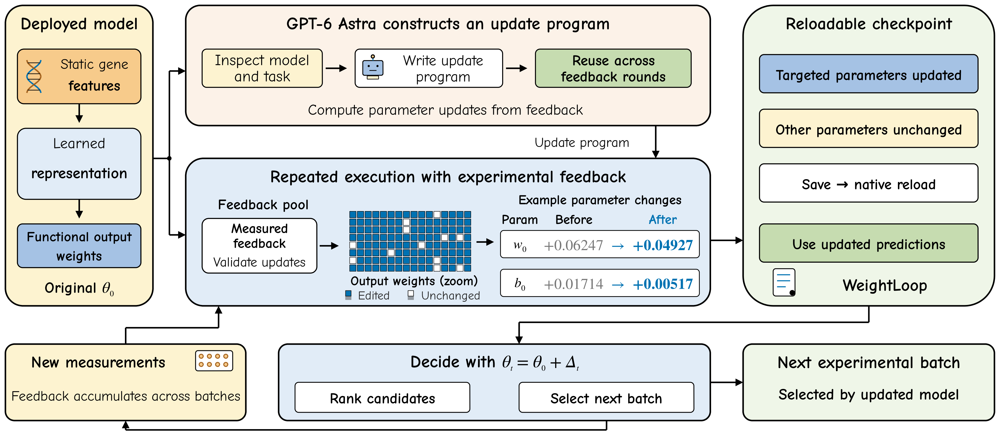
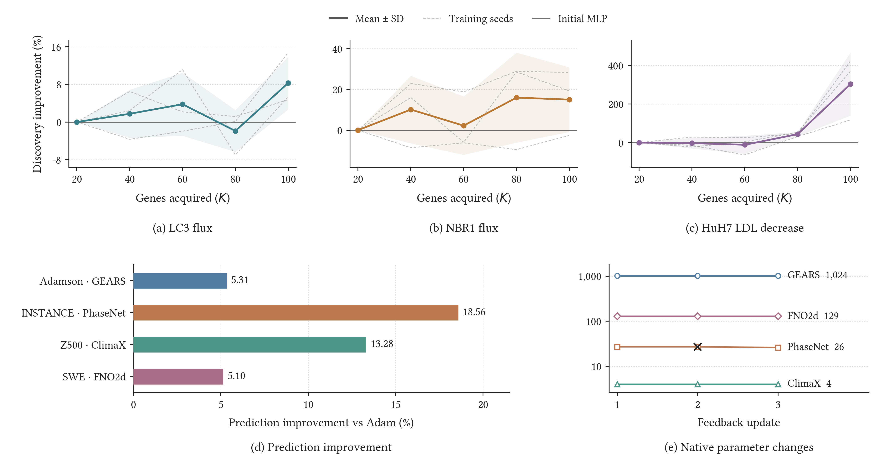

Lower primary error than Adam
Adamson RNA, INSTANCE P arrival, ERA5 geopotential and shallow-water prediction.
Scientific recommendation & model editing
Weight-Space Programming
with Experimental Feedback
* Co-corresponding authors: Jinfeng Xu and Zelin Zang.
limengran1998@163.com
Code: https://github.com/limengran98/WeightLoop
Anonymous code: https://anonymous.4open.science/r/WeightLoop-C75A/
Write the editor once.
Let experimental evidence update the model.
The feedback loop
Accumulate observed functional outcomes.
Estimate and validate a native update.
Save and reload through the original interface.
Prioritize a new batch with the revised model.
New assay outcomes join the feedback set.
Predictive models decide which experiments are performed, and those experiments determine the evidence available next. WeightLoop connects this growing body of evidence to the computation of an already trained predictor.
GPT-6 Astra constructs an editor in an interactive coding workflow; DeepSeek independently generates model-specific editors through its official API. After review, its logic remains fixed: acquired assays determine numerical corrections, feedback validation selects an update, and native checkpoints preserve the accepted change. The open-source repository provides executable editors, construction requests and source tables for the displayed studies.

The fixed numerical editor reduces error relative to Adam using identical feedback and writable parameters.
Four native case studies compare fixed editing with Adam using identical feedback and parameter pools. Functional ranking and sequential discovery are evaluated across three model-training seeds.
Adamson RNA, INSTANCE P arrival, ERA5 geopotential and shallow-water prediction.
The GPT-6 Astra editor improves mean utility over the initial MLP at both recommendation budgets.
GPT-6 Astra and DeepSeek editors improve final mean discovery utility over initial MLP ranking.
| Task | Predictor | Metric | Adam | WeightLoop | Improvement |
|---|---|---|---|---|---|
| Adamson | GEARS | RNA MSE ↓ | 4.496 × 10-2 | 4.258 × 10-2 | 5.31% |
| INSTANCE | PhaseNet | P-arrival MAE (s) ↓ | 6.446 | 5.250 | 18.56% |
| ERA5 Z500 | ClimaX | RMSE (m² s⁻²) ↓ | 1187.58 | 1029.83 | 13.28% |
| Shallow water | FNO2d | Relative L2 ↓ | 8.467 × 10-3 | 8.035 × 10-3 | 5.10% |
The fixed numerical editor operates within DeepSeek-selected parameter pools. Both updates use identical feedback and writable parameters.
| Predictor | Base | Adam | WeightLoop-A |
|---|---|---|---|
| scGPT | 11.204 ± 0.182 | 10.992 ± 0.015 | 10.997 ± 0.013 |
| scFoundation+GEARS | 12.075 ± 0.035 | 12.075 ± 0.035 | 11.171 ± 0.026 |
Base uses 40 adaptation targets. Adam and WeightLoop-A share 16 feedback targets, two feedback-validation folds, writable parameters and 20 query targets per partition. Values are mean ± sample SD across three model-training seeds, averaging three fixed partitions within each seed. The GPT-6 Astra coding workflow constructs WeightLoop-A, which lowers overall MSE from Base by 1.85% for scGPT and 7.49% for scFoundation+GEARS. Protocol and source records.

The objective, forward computation, feedback schema and editing permissions define the construction task. The generated program implements parameter proposals that act through the existing model.
Proposals fit one part of the returned feedback and are checked on another. The selected recipe is refitted on available feedback; keeping the original model remains an option.
Each update starts from the original parameters and accumulated evidence. Accepted native changes persist in the predictor used for the next experimental batch.
Functional ranking and sequential discovery use an MLP with a 128-unit final hidden layer. Ranking starts from 25 initial assays and provides 75 additional feedback assays to the editor. Native prediction uses GEARS, PhaseNet, ClimaX and FNO2d; a fixed numerical program estimates corrections within DeepSeek-selected parameter pools. Constructor documentation: GPT-6 Astra and DeepSeek.
Start with the bundled synthetic demonstration, then explore the recorded experimental results and reusable editor.
The demo illustrates the editing workflow. Scientific benchmark results are reported separately in the paper.
git clone https://github.com/limengran98/WeightLoop.git
cd WeightLoop
python -m pip install -e '.[scientific]'
python examples/feedback_demo.py --output outputs/demoPaper, code and project resources are maintained in the independent WeightLoop repository.
@misc{li2026weightloop,
title = {WeightLoop: Weight-Space Programming with Experimental Feedback},
author = {Li, Mengran and Li, Bo and Zhao, Weijing and Zhang, Chengyang
and Zhang, Boyu and Xu, Jinfeng and Zang, Zelin
and Leung, Victor C. M. and Li, Stan Z.},
year = {2026},
howpublished = {\url{https://github.com/limengran98/WeightLoop}}
}